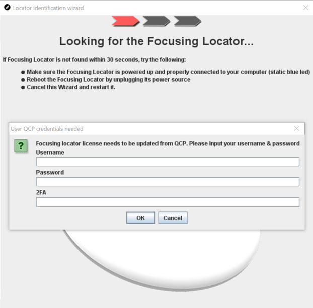

Create a Q17 Focusing Locator
In order to deploy a Quuppa project, you will need a Focusing Locator. It is used
for:
- Identifying Locators: Detecting the Locator ID of Locators in the project and mapping them to correspond with the Locators in the project file.
- Focusing Locators: Detecting the physical orientation of the installed Locators.
- Configuring Tags: Setting the Tag behaviour according to the needs of the project.
-
Power the Locator that you want to reconfigure into a Focusing Locator using a
micro-USB cable and connect the Locator directly to your computer using an
Ethernet cable.
Note: You can power the Locator directly from your laptop, via a USB hub or using a separate 5v power supply.Note: With the Q17 Locator, there is no need to set a static IP address to use it as a Focusing Locator.
-
Press and hold the reset button until the indicator light turns green, release
immediately. You will need a small pin or similar object to reach the reset
button.


- The Locator will reboot. This is indicated by the Locator's reboot sequence, where the indicator light blinks red, green and blue once.
- Once the reboot is completed, the Locator's indicator light will blink red and then green to indicate that it is now configured as a Focusing Locator. Once a connection to the network has been established, the indicator light will blink green.
- Start the Quuppa Site Planner (QSP) and open your project.
- Select a Locator to identify in the project, either by clicking on it in the map view or by selecting it from the object tree on the left.
- In the panel on the right, open the Deployment tab and click the Start identification wizard button.
-
The Identification Wizard will open and prompt you to enter your Quuppa
Customer Portal (QCP) credentials in order to obtain a Focusing Locator license
from the QCP for the Focusing Locator. Once you have entered your username,
password and 2-factor authentication code, click the OK
button.

Note: The QCP will automatically generate the required Focusing Locator license (valid for 360 days by default and renewable at the end of the license term). You can make as many Focusing Locators as you need from the Q17 Locators owned by your company and generate Focusing Locator licenses for them. - Follow the instructions given by the Identification Wizard. The Focusing Locator is now in focusing mode, as indicated by the static green light.
-
Once completed, the Focusing Locator is ready to use for deploying your
project, i.e. identifying and focusing Locators and configuring tags. For more
information about these steps, please read the Quuppa
Development Kit Quick Start Guide.
Note: You can also turn the Focusing Locator back into a normal Q17 by following the steps in the section Reset Q17 Focusing Locator into a Normal Locator.